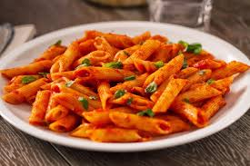

Pasta al pomodoro
Ingredienti
Di seguito riportiamo gli ingredienti per preparare il nostro piatto
- 330 g di penne
- aglio e sale
- 100g di salsa
- 100 gr di parmigiano
Preparazione
- Bollire l'acqua
- Cuocere la salsa nella pentola con aglio e sale
- Scolare la pasta e saltarla in padella con la salsa
- versare il parmigiano sulla pasta, saltandola
- Servire il Piatto